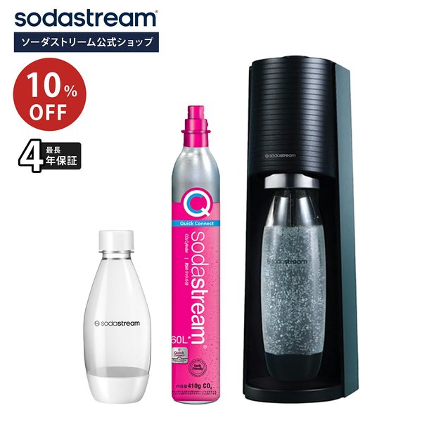
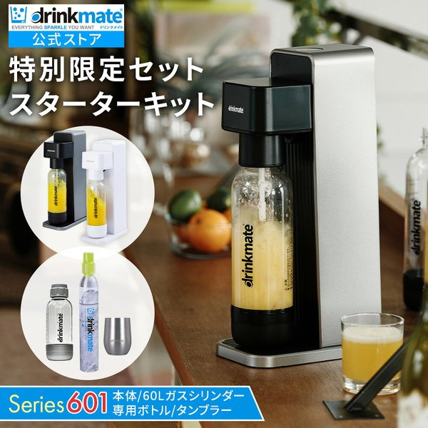
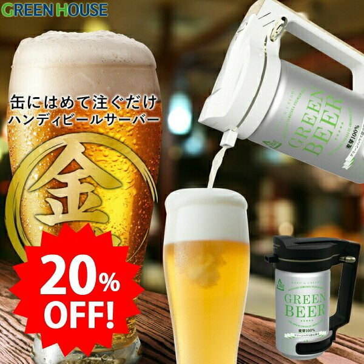
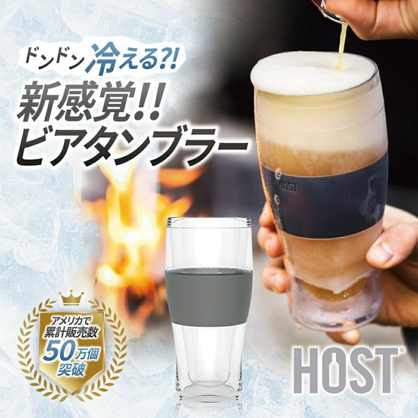
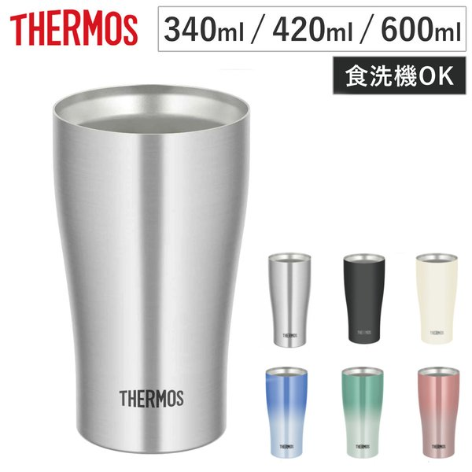
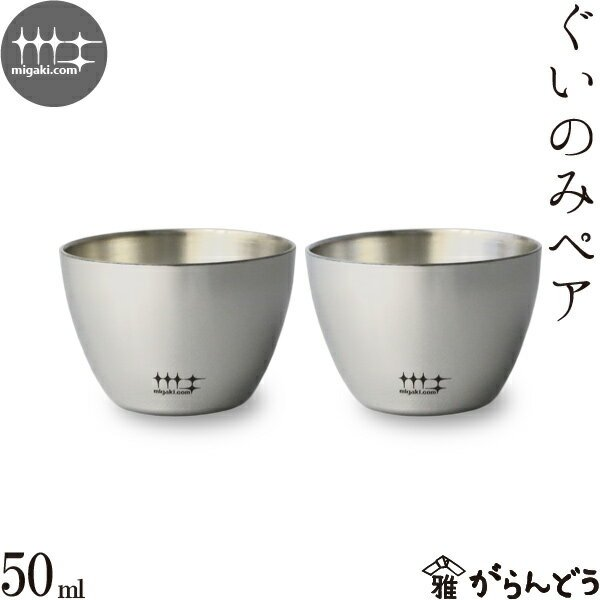
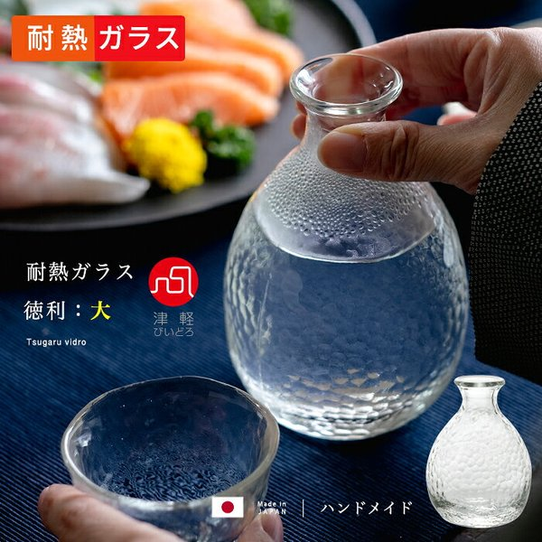
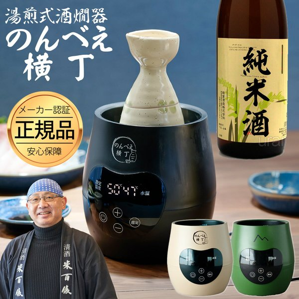
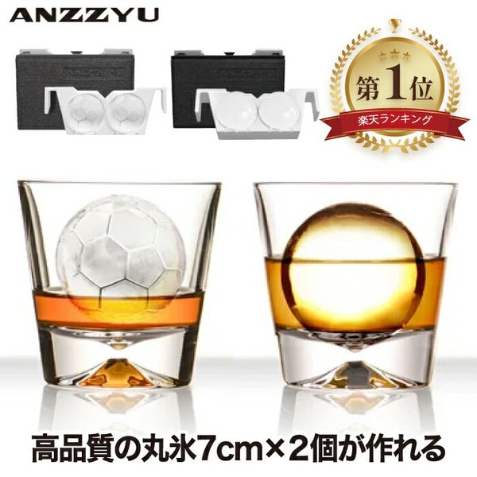
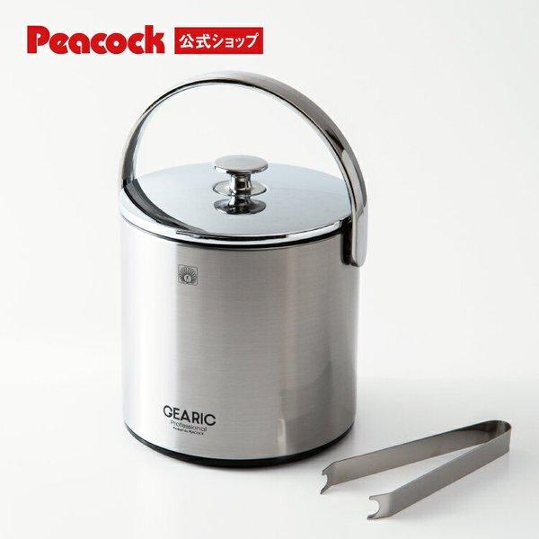

【2026年・おうち居酒屋】炭酸水メーカー・ビールサーバー・真空断熱タンブラー・ぐい呑み・徳利・酒燗器・アイスペール10選｜ソーダストリーム・ドリンクメイト・グリーンハウス・HOST・サーモス・津軽びいどろを実売価格で比較
家飲みが定着して、晩酌の道具を見直す人が増えています。炭酸水を自分で作る、ビールの泡を立てる、冷たい氷を用意する。ひと手間かけるだけで、家の一杯が少し特別になります。
選ぶ軸は3つです。「まず飲み物の幅」。炭酸水メーカーがあれば、ソーダ割りもサワーも家で作れます。「次に器」。真空断熱のタンブラーやジョッキは冷たさが長持ちし、ぐい呑みや徳利は日本酒の温度を楽しめます。「最後に氷と温度」。丸氷とアイスペールがあると、ウイスキーもビールも最後まで薄まりません。なお、レビュー件数が50件に満たない商品は記事内に実数を明記しています。
本記事では、楽天市場で人気・高評価のおうち居酒屋・晩酌グッズ10選を、実売価格とレビュー評価つきで写真付き紹介します。
- おすすめ10選 スペック・特徴比較表
- BEST 1｜TERRA スターターキット
- BEST 2｜炭酸水メーカー Series601 スターターセット
- BEST 3｜ハンディビールサーバー GH-BEERNS
- BEST 4｜ビールタンブラー 473ml 冷凍対応
- BEST 5｜真空断熱タンブラー JDY 600ml
- BEST 6｜ぐいのみ ペア 50ml ステンレス「雅」
- BEST 7｜耐熱ガラス 徳利 大
- BEST 8｜湯煎式 電気酒燗器
- BEST 9｜アイスボールメーカー 7cm 2個取り
- BEST 10｜アイスペール 1.6L 魔法瓶
- 【読者負担0円】買わなくても得する無料サービス
- まとめ：おうち居酒屋＆晩酌グッズ10選の選び方
| 順位 | 商品名 | ブランド | 最大の特徴・おすすめ理由 | 総合評価 |
|---|---|---|---|---|
| BEST 1 | TERRA スターターキット | ソーダストリーム（SodaStream） | ボタンひとつで炭酸水が作れる | 4.58 |
| BEST 2 | 炭酸水メーカー Series601 スターターセット | ドリンクメイト（Drinkmate） | 水以外の飲み物にも炭酸を入れられる | 4.63 |
| BEST 3 | ハンディビールサーバー GH-BEERNS | グリーンハウス（GREEN HOUSE） | 缶ビールに付けるだけ | 4.37 |
| BEST 4 | ビールタンブラー 473ml 冷凍対応 | HOST（ホスト） | 冷凍庫で冷やして使える | 4.54 |
| BEST 5 | 真空断熱タンブラー JDY 600ml | サーモス（THERMOS） | 結露が出にくい真空断熱構造 | 4.82 |
| BEST 6 | ぐいのみ ペア 50ml ステンレス「雅」 | 磨き屋シンジケート | 燕市の研磨技術で作られた日本製 | 4.57 |
| BEST 7 | 耐熱ガラス 徳利 大 | 津軽びいどろ | 電子レンジで燗をつけられる | 4.69 |
| BEST 8 | 湯煎式 電気酒燗器 | のんべえ横丁 | 湯煎式でじっくり温まる | 4.46 |
| BEST 9 | アイスボールメーカー 7cm 2個取り | ANZZYU | 直径7cmの丸氷が2個作れる | 4.47 |
| BEST 10 | アイスペール 1.6L 魔法瓶 | ピーコック（Peacock） | 真空断熱で氷が溶けにくい | 4.63 |
TERRA スターターキット

ソーダストリームのTERRAは、ガスシリンダーと専用ボトルが付いた入門セットです。ボタンを押すだけで炭酸水が作れ、炭酸の強さも調整できます。電源が不要で置き場所を選ばず、付属のボトルはそのまま冷蔵庫に入れて冷やせます。炭酸水を毎日買う人ほど、ペットボトルのごみと買い足しの手間が減ります。楽天市場での実売価格は約14,850円（2026年11月時点）。
- ボタンひとつで炭酸水が作れる
- 電源不要で置き場所を選ばない
- 専用ボトルは冷蔵庫で冷やせる
- ガスシリンダーの交換は定期的に必要
炭酸水メーカー Series601 スターターセット

ドリンクメイトのSeries601は、水だけでなく果汁やお茶など、市販の飲み物にも炭酸を入れられる炭酸水メーカーです。スターターセットには専用ボトルとガスシリンダーが付き、届いた日から使えます。炭酸の強さをボタンで加減でき、冷やしていない飲み物にも炭酸を入れられるのが特徴。家でジュースを割って楽しみたい人に向いています。楽天市場での実売価格は約9,800円（2026年11月時点）。
- 水以外の飲み物にも炭酸を入れられる
- ガスとボトルが付いたセット
- 炭酸の強さを調整できる
- 炭酸を入れたあとは、ボトルをゆっくり開ける必要がある
ハンディビールサーバー GH-BEERNS

グリーンハウスのハンディビールサーバーは、缶ビールに装着して超音波で泡を作る器具です。缶をセットしてボタンを押すと、きめ細かい泡が立ち、注いだビールがクリーミーになります。乾電池で動くので、テーブルでもベランダでも使えます。泡の質を変えたい人や、家飲みのビールを少し特別にしたい人に向いています。楽天市場での実売価格は約2,886円（2026年11月時点）。
- 缶ビールに付けるだけ
- 乾電池式で場所を選ばない
- きめ細かい泡が立つ
- 缶のサイズによっては装着しにくい
ビールタンブラー 473ml 冷凍対応

HOSTのビールタンブラーは、冷凍庫で冷やしてから使う保冷タイプです。二重構造の間に液体が入っていて、凍らせるとビールを注いだときに冷たさが長持ちします。473mlは350ml缶をまるごと注げるサイズ。ビールだけでなく、ハイボールや酎ハイにも使えます。家飲みの最初の一杯をキンキンにしたい人に向いています。楽天市場での実売価格は約3,980円（2026年11月時点）。
- 冷凍庫で冷やして使える
- 350ml缶がまるごと注げる
- ビール以外にも使える
- 使う前に冷凍庫で冷やす時間が必要
真空断熱タンブラー JDY 600ml

サーモスの真空断熱タンブラーは、340ml・420ml・600mlから選べるステンレス製です。真空断熱構造で、冷たい飲み物の結露が出にくく、熱い飲み物でも外側が熱くなりません。食洗機に対応しているので、使ったあとの手入れが簡単です。600mlはビールやハイボールをたっぷり入れたいときに向くサイズです。楽天市場での実売価格は約2,280円（2026年11月時点）。
- 結露が出にくい真空断熱構造
- 食洗機に対応
- 3サイズから選べる
- 底が細いので大きな氷は入りにくい
ぐいのみ ペア 50ml ステンレス「雅」

磨き屋シンジケートのぐいのみ「雅」は、燕市の金属研磨の技術で作られたステンレス製のぐい呑みペアです。50mlの小さな器で、冷酒を少しずつ飲むのに向いています。ステンレスは熱を伝えやすいので、冷酒なら冷たさが、ぬる燗なら温かさが手に伝わります。金属ならではの光沢があり、割れないので洗うのも気軽です。楽天市場での実売価格は約5,500円（2026年11月時点）。
- 燕市の研磨技術で作られた日本製
- 割れにくく扱いやすい
- 冷酒の冷たさが伝わる
- レビューは21件と少なく、電子レンジには使えない
耐熱ガラス 徳利 大

津軽びいどろの徳利は、青森のガラス工房で作られた耐熱ガラスの酒器です。大サイズは1合より少し多く入り、冷酒にも燗酒にも使えます。耐熱ガラスなので電子レンジで温められ、手軽に燗をつけられます。びいどろ特有の色の揺らぎがあり、食卓に置くと涼しげな印象になります。楽天市場での実売価格は約1,980円（2026年11月時点）。
- 電子レンジで燗をつけられる
- 冷酒にも燗酒にも使える
- 手吹きの色合いがきれい
- レビューは13件と少なく、ガラスなので落とすと割れる
湯煎式 電気酒燗器

のんべえ横丁の電気酒燗器は、徳利を湯煎で温める卓上タイプです。温度を設定しておけば、日本酒を適温に保ったまま飲めます。カップ酒やワンカップもセットでき、1〜2人分の晩酌に向いています。熱燗の温度は好みが分かれるので、ダイヤルで調整できるのは便利。冬の晩酌を長く楽しみたい人に向いています。楽天市場での実売価格は約6,980円（2026年11月時点）。
- 湯煎式でじっくり温まる
- 温度をダイヤルで調整できる
- カップ酒にも対応
- 水を入れて使うので、置き場所と手入れに少し手間がかかる
アイスボールメーカー 7cm 2個取り

ANZZYUのアイスボールメーカーは、直径7cmの丸い氷を2個作れる製氷器です。大きい氷は溶けにくく、ウイスキーのロックやカクテルに使うと薄まらずに飲めます。型に水を入れて凍らせ、上下を外すだけで取り出せます。透明感のある丸氷が作れるので、家飲みの一杯が少し特別な見た目になります。楽天市場での実売価格は約3,450円（2026年11月時点）。
- 直径7cmの丸氷が2個作れる
- 大きい氷は溶けにくい
- 型から外すだけで取り出せる
- 凍るまでに半日以上かかる
アイスペール 1.6L 魔法瓶

ピーコックのアイスペールは、魔法瓶構造の1.6Lアイスバケツです。真空断熱の二重構造で、氷が溶けにくく、外側に結露が出ません。フタとトング、底のスノコが付属し、氷を入れたままテーブルに置けます。ホームパーティーや家飲みで、氷を何度も取りに行かずに済むのが便利。食卓をぬらさずに使えます。楽天市場での実売価格は約3,990円（2026年11月時点）。
- 真空断熱で氷が溶けにくい
- 結露が出にくい
- フタ・トング・スノコ付き
- レビューは30件と少なく、1.6Lは大人数のパーティーには小さめ
この記事の商品を買う前に、まずは無料で得する選択肢をチェック。どれも登録・利用は0円で、無料期間中に解約すれば料金はかかりません。読みたい雑誌がある人、ポイントを貯めたい人、アンケートなら気軽という人、それぞれに合うものを選べます。
初回31日無料・無料期間中に解約すれば0円 → 楽天ポイントモール｜登録無料で毎日ポイ活
買い物なしでもポイントが貯まる無料サービス → 楽天インサイト｜アンケートに答えてポイント
登録無料・すきま時間のアンケートで貯まる → 楽天カード｜年会費永年無料
新規発行・年会費ずっと0円 →
4つのサービスの違いと使い分けは「出費0円で得する！買わずにポイントが貯まる無料サービス厳選4選」でまとめています。
💡 まとめ：おうち居酒屋＆晩酌グッズ10選の選び方
晩酌の道具は、作る・注ぐ・冷やすの3つで揃えると迷いません。作る道具は、炭酸水ならソーダストリームのTERRA、ジュースも炭酸にしたいならドリンクメイトのSeries601。ビールの泡を変えたいならグリーンハウスのハンディビールサーバーです。注ぐ器は、ビールなら冷凍できるHOSTのビールタンブラーとサーモスの真空断熱タンブラー、日本酒なら燕市のぐい呑みペアと津軽びいどろの徳利。燗をつけるならのんべえ横丁の酒燗器があると、冬の晩酌が長く楽しめます。冷やす道具は、ANZZYUの丸氷メーカーとピーコックのアイスペール。この10品で、家飲みの段取りが一通りそろいます。
楽天市場では「5と0のつく日」や「お買い物マラソン」などのキャンペーンに合わせて購入すると、ポイント還元が最大化してお得に手に入ります。ぜひチェックしてみてくださいね。